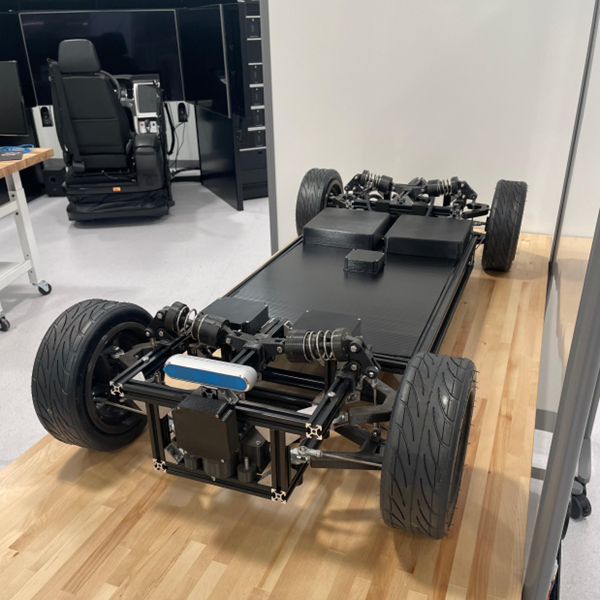

Graduate Research Assistant
Led the design and experimental validation of vehicular safety and security exploration platforms. Defined system requirements, validation plans, and test architectures for scaled autonomous vehicle systems, steer-by-wire platforms, wheel speed sensor attack testbeds, ranging sensor attack platforms, and mixed-reality vehicle experiments.
